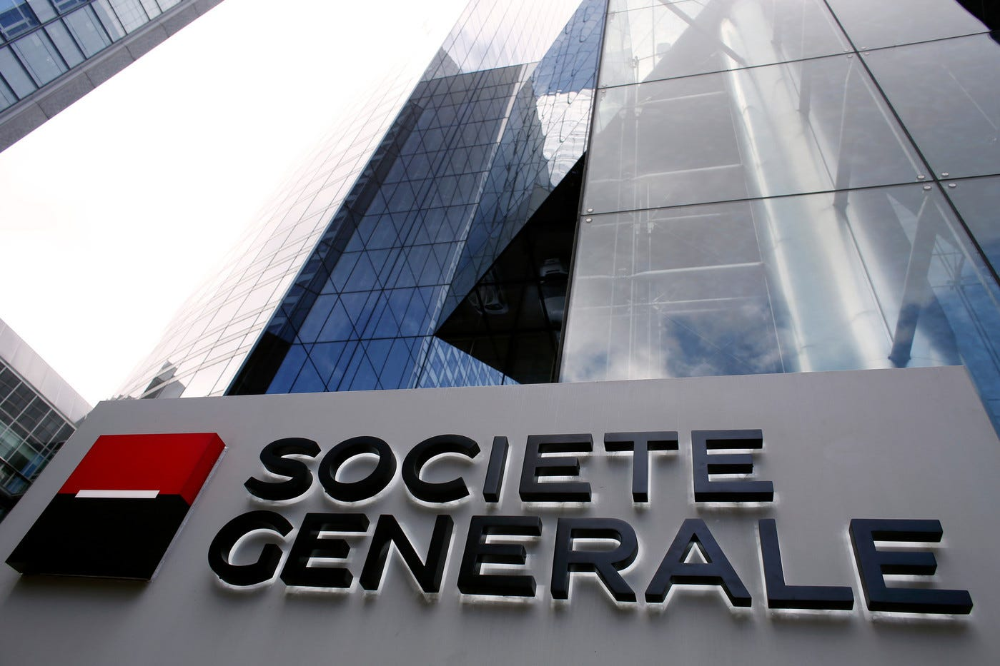

Democratization of the Swap market
Connecting independent traders and complex financial assets


Since its adoption, the internet has democratized many things that use to be done by professionals one of these things is trading. Like how the internet has allowed click and buy it also allowed millions of people to click and trade. Access to financial markets has been democratized allowing people to trade more and more financial assets like stocks and options but financial markets are made of many more complex financial instruments types that can be democratized for internet users to understand them and trade them. Swaps are part of those assets that should be made simply accessible to people with some simple clicks.
About swaps, I just think of the trading of this bank where I used to work and where traders used to have an agreement between them about their portfolio by making internal transactions like swapping opened positions. I hope that you can remark that this is a tech-enabled idea that you can develop because you could build a platform that will allow independent traders to swap the positions they hold between them what ever their target broker is but for this tech-enabled idea to be simply implemented you should have access to the brokers API or/and have access to the portfolio of the traders that will adopt this tech-enabled trades swapping platform. This is an idea that I am sharing with you but the tech-enabled idea about swap markets that led to this article is very different from it because it's about the air industry.
When I first started to trade online I was amazed about how great it was to be at home and trading like professional traders do but of course, I have experienced some disappointment that led me to think that the financial market should not be open as it is actually with platforms like eToro, Robinhood and others. But today my opinion has changed and I think that more complex financial asset classes should be made tradeable online like how stocks and options are and they should be taught to everyone who wants to learn them because there are many who are home trading not only because they want to make easy money but because they love finance and more complex are the types of trading activities they can perform with a personal computer and an internet connection more they will be happy to adopt these activities. This set of persons eager to adopt a new type of financial instruments tradeable online are the minimum viable audience of this opened positions swap marketplace ace that I have described to you above but for this that I kept in mind CFOs will probably be part of its target minimum viable audience.
PS: I have been disrupted by a lack of a computer to use for 6 days. Now that I have a slow but working computer that I could use for writing articles like this one and I hope I will be able to code these tech-enabled platform ideas that I have with it but for sure it will not be possible to make these amazing gameplay and game technologies behind Godda Game.